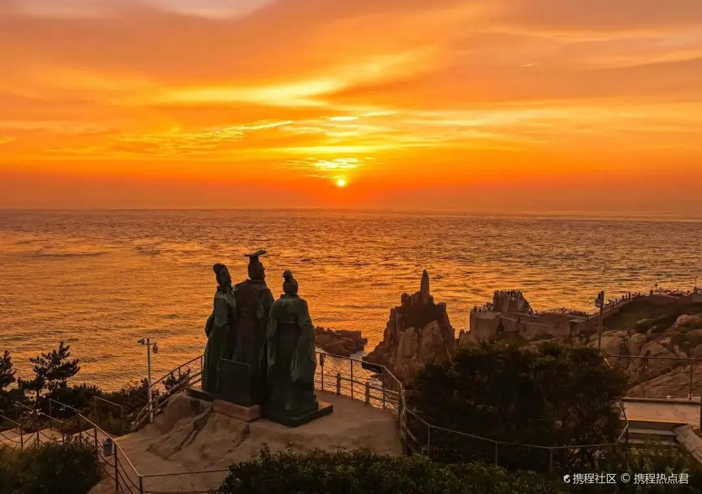
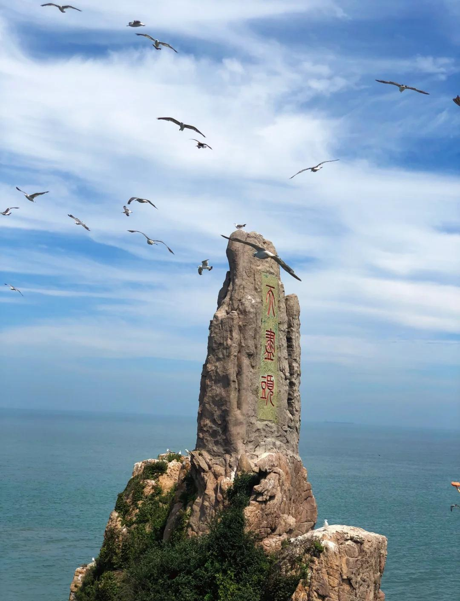
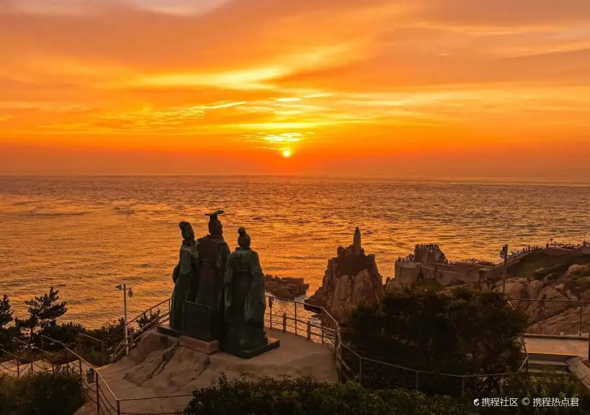
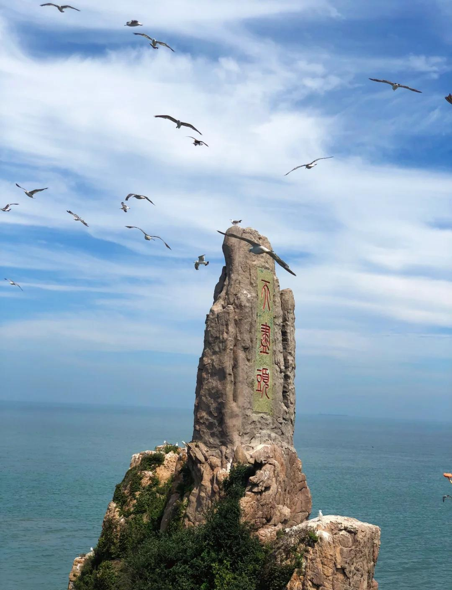

成山头，又名“天尽头”，位于山东省荣成市成山镇，因地处该地段山脉最东端而得名，是我国最早看见日出的地方，自古就被誉为“太阳起升的地方”，故而有“中国的好望角”之称。
成山头被认为是“日神”所在地，原因有二，一是《史记·封禅书》载“七曰日主，祠成山”，姜太公封八神，将日主祠设在成山头，纳入齐国国家祀典，赋予其官方祭祀日神的正统地位；二是殷周以来“春分祭日”成礼俗，成山头因独特的地理位置成为祭日核心场所，延续了数千年之久。早在秦汉时期，秦始皇、汉武帝便亲临此地拜祭日神，修建拜日台、日主祠，使其成为中国历史上首个帝王亲祀的国家级祭日场所，承载着古代天人合一的祭祀文化与皇权象征。